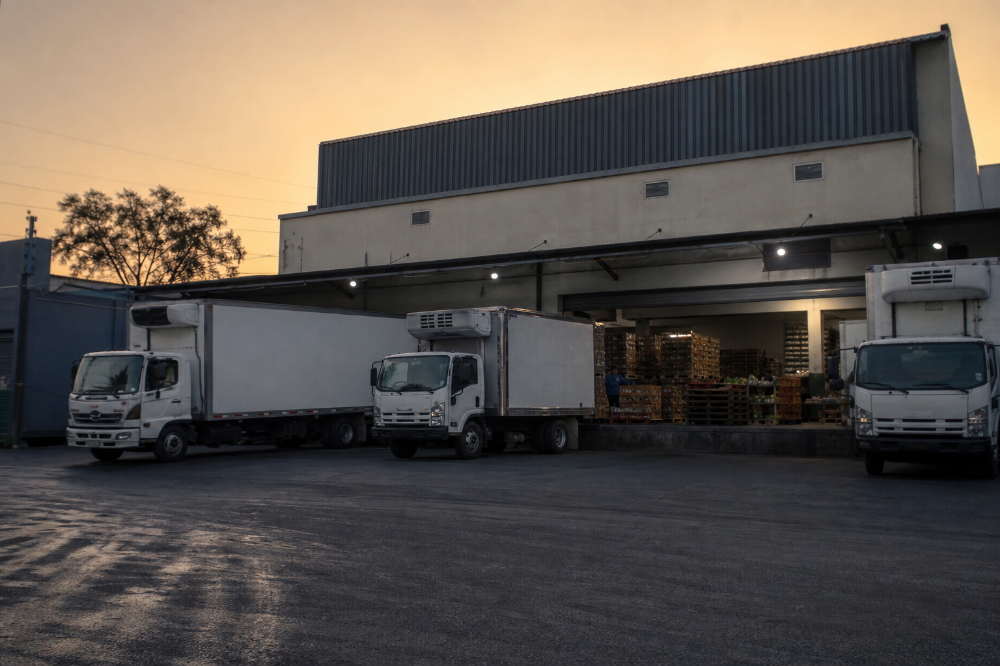
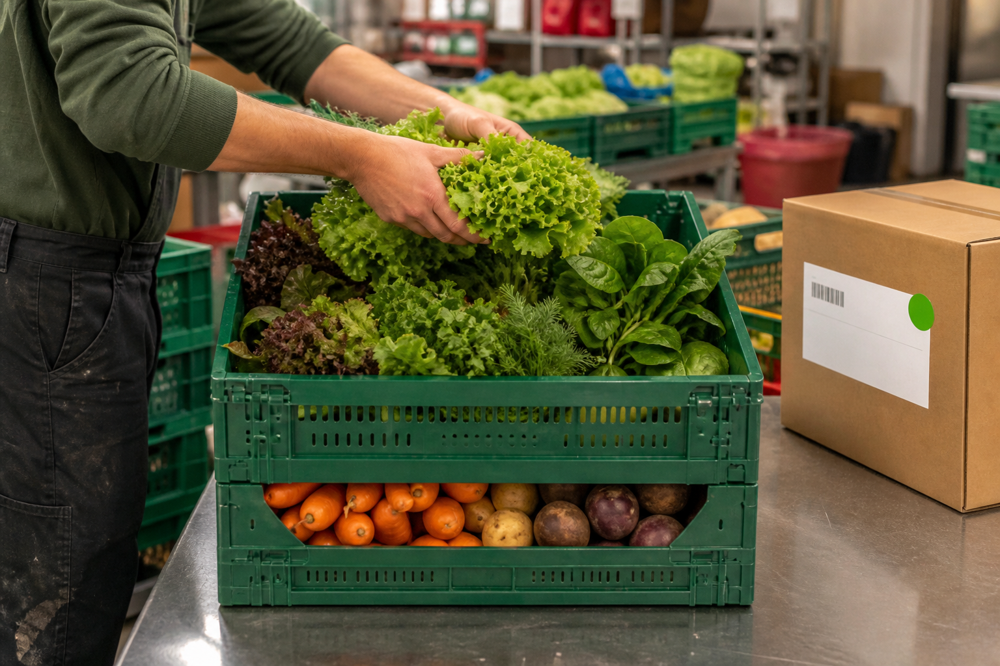
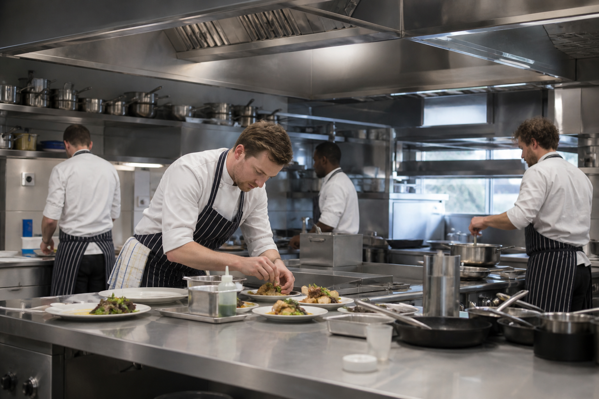

Empezamos con un camión y una lista de clientes. Hoy salen dos rutas al día, los siete días de la semana.
Nuestra medida es la caja que pediste anoche: completa esta mañana, a la temperatura correcta y en la puerta que corresponde. Trece años son la suma de esas entregas.

Estamos cerca de donde llega el producto cada madrugada, y eso nos da el mismo acceso que tiene quien opera dentro. Guardamos en bodega propia: temperatura controlada de principio a fin, un área de selección de uso exclusivo, horario propio y trazabilidad de cada caja desde que entra hasta que se firma.
250 m² de cámara fría, área de selección y empaque, y andén propio de carga.
Una cocina equipada que ponemos a disposición de nuestros clientes: para capacitar personal, probar un menú nuevo antes de montarlo o fotografiar platillos. El uso es gratuito y es una cocina de trabajo, equipada para producir de verdad.
